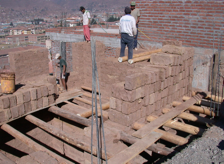

Adobe blocks
Sun-dried (or air-dried), unfired mud (clay) masonry, where the clay is cast into blocks (and sometimes into bricks) and then laid, as opposed to walls constructed in-place out of earth, as in earth construction (cob or rammed earth).


Manufacturing of adobe blocks, Peru (M. Blondet)

Different shapes and sizes of adobe blocks (S. Brzev)

Adobe blocks, Peru (S.Brzev)

Adobe wall, Chile (S.Brzev)